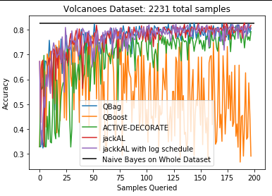
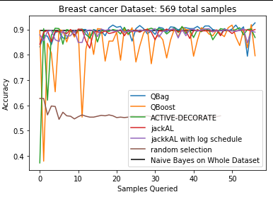

Active Learning via Ensembles
This post is a paraphrased version of a report I submitted for a machine learning course. I found the topic to be quite interesting, so I’m reposting it here.
The field of active learning has many different approaches. This section focuses on the Query-by-Committee (QbC) framework, which uses ensembling methods to find the best sample to query the oracle for a label. There are generally two parts to this approach. The first part is to construct and train a model ensemble. Two methods are implemented in this work: bagging and boosting. Bagging has the advantage of simplicity, but boosting often gives a larger performance increase. The second part is finding the most optimal example to query the oracle. This is done by finding the maximum “disagreement” of the classifiers, which is done via a variety of methods, including entropy and KL divergence. Overall, the QbC method allows comparable or greater accuracy to a classifier trained on the whole dataset, but with a vastly reduced number of required samples. This work proposes a new QbC framework called jackAL based on the jackknife; this method offers an advantage over the others because it allows the model to maximize small quantities of data, which is often the case when active learning is required. A variation on the jackknife, jackknife-k is explored as well.
Bagging and Boosting
The first two algorithms implemented in this work come from Abe and Mamitsuka, 1998 [5], and also show up in Milidiú et al, 2012 [6] for natural language processing tasks and Körner et al [7] for the multiclass case. First, we give an overview of the paper; then, we detail our implementation of the QBag and QBoost algorithms. The paper begins by discussing the general concept of QbC. The theory behind QbC is that an ensemble of an ideal randomized learning algorithm will choose a query point to maximize the information. However, this assumes that the base learner is the Gibbs learner, which is intractable. Therefore, this paper presents two committee construction methods, Query-by-Bagging (QBag) and Query-by-Boosting (QBoost) instead.
The paper then discusses the pros and cons of using QBag and QBoost. Namely, QBag is simpler, and can isolate and minimize the variance in the data (but not the bias). QBag does this by subsampling from an identical distribution, meaning that it can minimize the small statistical variation in the data over many iterations. With QBoost, on the other hand, the sampling distribution itself can change as well, depending on the ensemble. Both algorithms follow a similar structure. This is summarized in Algorithm 1, which is a paraphrase of the generalized QbC algorithm provided in the paper.
The model predicts new examples via simple majority vote. The paper proceeds to test and compare the methods on a variety of datasets, and finds QBoost to be the better algorithm. We implemented both QBag and QBoost, and found both to be fairly straightforward modifications of Algorithm 1. Note that the original authors chose to use decision trees (C4.5) as the base algorithm, whereas this work uses multinomial naive Bayes; this choice was made for consistency across the other sections of this report. C4.5 could easily be dropped in, as the sklearn framework is very modular. Additionally, QBag and QBoost use a majority vote/average approach for disagreement, whereas we use the entropy approach discussed above.
Other differences from the original implementation was that we chose not to use cross validation; due to both performance requirements and again consistency across the report. The authors also tried a variety of test subsets (as joint and disjoint sets from the query and training data) in order to better simulate a true active learning scenario, as in this case, all labels are known a priori, so the accuracy evaluated at each step across the test or the test + training data would actually be unknown. For simplicity, we evaluate the algorithms using the whole dataset; this makes sense because we wish to see how quickly each converges to the expected value, which is a model trained on the whole dataset initially. The authors also conclude that the time complexity of a QbC model is O(NTR * F(N)), where F is the learning algorithm, N the input size, T the number of times the resampling is done, and R is the number of query candidates. This is noted by the Abe and Mamitsuka to be significant but not intractable. They additionally note that QBag is trivially parallel, although QBoost is not.
ACTIVE-DECORATE
QBag and QBoost have the advantage of simplicity, but they are certainly not the only ensembling methods. The third algorithm implemented in this work, DECORATE is from Melville and Mooney 2004 [OLD18], and is adapted into a QbC method called ACTIVE-DECORATE in Melville and Mooney 2005 [OLD19]. The authors of this paper seek to create an ensemble that is specifically very diverse. However, this is not done with resampling, like QBag and QBoost; instead, the authors propose inserting artificially generated data into the training corpus in hopes that this will cause further variation among the models in the ensemble.
The algorithm begins by training a base classifier on the whole training set. Then, for i iterations, artificial training data is generated, based on the distributions of the training set. The authors suggest the size of the artificial set to be between 50%-100% of the training set. Then, a model is trained on the union of the training and artificial sets, and added to the ensemble. If the ensemble gives a better overall accuracy on the training set, then the model is accepted into the ensemble, else, it is rejected. This process continues for a set number of iterations or until the desired number of models has been obtained. New examples are classified by taking the average of the predicted probabilities of each model, and taking the maximum, as in Equation 1.
In their further work, the authors expanded the DECORATE algorithm to become an active learning method. The authors argue that ACTIVE-DECORATE will work better because DECORATE purposefully generates diverse ensembles, therefore, there will be more diversity in their predictions, which allows the votes of the ensemble to be less homogeneous. This increase in disagreement allows the active learner to get a better understanding of what the current training corpus lacks, thereby choosing better examples earlier then a resampling method like QBag or QBoost. Although the authors do not give an example for why, we posit that an explanation for this is that when the sample size is small, a the very beginning, QBag and QBoost both have a tendency to select redundant examples, and if the classes drawn by the subset are unbalanced, this can cause failure. For example, if the current training corpus is of length 5, and 4 of the 5 are positive, and the possible query options are all of the omitted class, then the model will have a tough time making a decision.
As with QBag and QBoost, the authors of ACTIVE-DECORATE suggest a decision tree algorithm be used as a base learner, whereas we again implemented multinomial naive Bayes. An interesting claim to note is that since naive Bayes is seen as a “stable” learning algorithm, it supposably does not minimize the variance due to statistical noise as well as unstable learners. This may factor into the performance of our ACTIVE-DECORATE . The authors also claim that DECORATE is on par with AdaBoost; we do not find this to be universally true, but also do not do a rigorous comparison between the two, as we focus on the active learning variant instead. The authors also explicitly note that boosting can fail with small sample size; this can be seen in our implementation as well in the Results section.
The authors offer two hypotheses for why their ACTIVE-DECORATE method is optimal. The first is that ACTIVE-DECORATE explicitly fosters diversity, and the authors believe this to be the critical component. We do not take so strong a stance, as evidenced by our novel extension, jackAL; the learners in a jackAL ensemble are all fairly similar. However, ACTIVE-DECORATE does boast the advantage of using the entire training set at each time, as it relies on generating random training examples. The authors also posit that DECORATE will out-perform bagging, AdaBoost, and random forests on small datasets; although this may be true for the pure algorithm, we do not find this to always be the case for the active learning variants. Melville and Mooney ran a very similar test suite to the one used for QBag and QBoost as well. Additionally, they use a different disagreement metric, JS-divergence, which is a measure of similarity between probability distributions as well as the majority vote metric from Abe and Mamitsuka. They find that JS-divergence chooses examples to strength the model’s certainty, but the majority vote method maximizes the margin (the entropy minimization procedure we use reduces to this method in the binary classification case [1]).
Novel Extension: JackAL- active learning with the jackknife
As mentioned at the beginning, the jackknife is an early resampling method that involves taking leave-one-out samples of the training data. We can then build ensembles from these subsets. There are a few things to note about this process. Obviously, using the jackknife will result in a very large ensemble (size of n-1), which requires training many models. Thus, this procedure is very computationally expensive, and gets more so as the size of the dataset increases. In return, the jackknife’s many classifiers will reduce the impact of the statistical noise in the data quite a bit, as the effect of each and every point is considered. Additionally, the large number of subsets offered by the jackknife causes it to be suitable for when the size of the sample is small, such as in the early stages of the active learning problem. However, as the size of the sample increases, the jackknife becomes less and less feasible and useful, as the removed example has less and less of an effect. A modification of the jackknife, jackknife-k, is discussed in Wu 1986 [8], which simply deletes k elements of the set, rather than 1. Note that this method is analogous to bagging with many bags, which we know to be functional. However, in QBag, the number of bags is held to be constant. Jackknife-k provides us with an opportunity to vary k as a function of the size of the training subset. This allows us to reap the benefits of leaving one sample out when the sample size is very small, but increasing the size to have more of an effect on the ensemble when the number of samples is larger. Thus, we propose a new algorithm: jackAL (jackknife Active Learning), that implements jackknife-k where k obeys some schedule.
Algorithm 2: jackAL
Input: X, the training data
k, the number of elements to delete or
schedule, a function of |X| that returns a value for k
n, the number of samples allowed to be queried
let the training corpus be a set containing one example
for i < n; i++
run jackknife-k(X,k,schedule) on the current corpus
calculate the disagreement of the ensemble
query the best point to add to the corpus via disagreement
return the current models
Prediction is done the same was as for ACTIVE-DECORATE. The choice of the schedule is still under testing. However, we hypothesize that monotonically positive functions that “level out” at around 10-20% of the size of the dataset would behave optimally, as a large k in the smaller cases could create poor ensembles, and a too small k when the dataset is small will likely have little effect other then smoothing statistical noise, the distribution of which we are overly interested in. As of now, the log10 function is chosen as the default behaviour. Note that this procedure is could be reframed as a modified QBag function, where the number of bags is variable as a function of the input size. We choose to stick with a jackknife implementation because we find that a small value of k is more optimal in the early regime of active learning with few samples, and this procedure is more analogous to the jackknife-1 then a bagging procedure with many bags. Additionally, the choice of Gaussian Naive Bayes (GNB) as the learner for continuous functions has not be robustly tested. As GNB tends to return probabilities very close to 0 or 1, it perhaps is not the optimal choice for a model like jackAL or ACTIVE-DECORATE. A better choice might be logistic regression, as it returns more “smoothly” distributed probabilities. As an aside, the predict_proba function from sklearn, which was used to obtain the probabilities, is known to be rather unreliable for models like GNB as well. We feel that jackAL works because it a) effectively minimizes statistical noise and b) chooses the right query points in the case where little data is available. Statistical noise is minimized because of the leave-k-out properties of jackknife-k; this enables models to reduce this pesky noise rapidly. Note that this hypothesis conflicts with the belief of the authors of ACTIVE-DECORATE; since the individual |n-k| subsamples will all be quite similar, there will not necessarily be much diversity between the individual models. We hypothesize that this differing approach causes jackAL to be more stable then ACTIVE-DECORATE, in the sense that the overall accuracy does not “bounce” around during training, which can be seen in the results section. However, ACTIVE-DECORATE may cause higher “spikes” of intermittent accuracy as well, in contrast to the slow-but-steady jackAL. We also posit that jackAL is a good choice because it chooses well with a small dataset. This makes sense; as jackAL constructs many models, it may be able to “squeeze” each drop of information out of a very small dataset. We additionally believe that this behavior of promoting a strong-start is very beneficial; this is analogous to the model picking up some form of momentum, although we have no way to empirically prove this or the earlier hypothesis. Nevertheless, we do find jackAL to be a competitive active learning method.
Implementation Details
In summary, the implemented methods from the literature for this study are QBag, QBoost, DECORATE, and ACTIVE-DECORATE. Additionally, the novel extension jackAL was implemented as well, in the original jackknife, jackknife-k, and scheduled jackknife-k forms. All code is written in Python 3.7. The model chosen to test the ensembles is Naive Bayes, using a multinomial distribution for categorical values and a Gaussian distribution for continuous values. The particular implementation used is from the scikit-learn library; our pure Python implementation proved to be too slow, especially in the case of ensembling, when the model must be retrained many times. The entropy function from scipy was additionally used for the disagreement metric. The NumPy library was used extensively to speedup computation times. Additionally, an optimization was made that applied to all algorithms: instead of looping through the entire query set, a smaller subset was sampled with replacement according to a uniform distribution. This optimization was suggested by Abe and Mamitsuka and implemented across the board for comparison’s sake.The size of this sample set is a parameter on all functions. This optimization is a significant speedup, and appears to have minimal impact on the performance. This may be dependent on the data, as it inherently assumes that the optimal query examples are mostly non-unique; that is, the samples form clusters of optimal examples, and we seek to select an arbitrary sample from that cluster. This concept is further explored in the Density Weighted Learning section in this report. All other code written for this work is the sole work of the authors; no additional references other than the original papers were used outside of the previously mentioned. In the future, all methods would experience a massive speedup with the introduction of parallelism. The problem is trivially parallel in some places, such as when training the n-k models when using jackAL. Additionally, the code could be further optimized in a few places. The experimentation and code to generate figures for this report can be found in a Jupyter notebook, and the particular functions are all separated in a .py file.
Results
The results of this experiment were quite promising. All methods of active learning performed surprisingly well. Such a large speedup was not anticipated before the start of this project. The results are delineated in Figure 1. All models appear to achieve similar training accuracy to a naive Bayes model trained on the whole dataset with vastly fewer required examples. Amongst the models, QBag and jackAL appear to be the most competitive, in contrast to the findings of the original authors of QBoost, who claimed that it was better then QBag. In fact, QBoost appeared to diverge rather then converge. This strange behaviour is due to the introduction of too much randomness; if the size of the query set (resampled at every iteration) is doubled from the 50 to 100, QBoost performs comparably to QBag. This example is left in to illustrate the importance of hyperparameter tuning. The jackAL method posited in this study appears to be quite good, and appears to be very consistent after around 10 examples seen on the Volcanoes dataset, which is a discrete dataset. The second dataset tested is the breast cancer dataset included in sklearn, which is a continuous, binary classification dataset with 569 samples. Notably, QBoost appears to oscillate quite a bit, as opposed to algorithms like QBag or jackAL. All active learning models are a vast improvement over random selection, as random selection only obtains ~50% accuracy by the time the other models converged. The voting dataset was also tested, but since random selection causes the model to converge within ~5 samples, it was deemed too easy for comparison purposes.
 
Conclusions
In conclusion, QbC appears to be a competitive, albeit computationally expensive, method. We foresee this type of learning being useful when obtaining more examples is expensive or time consuming; in the future, we hope to apply this method to degradation of photovoltaic modules that undergo artificial weathering. As the artificial weathering process is long and costly, it would be useful to know what kind of samples would be useful when putting the next batch into simulated exposure. All methods of QbC reviewed in the literature, including QBag, QBoost, and ACTIVE-DECORATE were shown to be effective on our test datasets, and the proposed novel extension, jackAL, performed as well or better then the known algorithms. Future work could include exploring different scheduling functions for jackAL and different disagreement functions then entropy.
References
[5] N. Abe and H. Mamitsuka, “Query Learning Strategies Using Boosting and Bagging.,” Madison, Wisconsin, USA, Jan. 1998, vol. 15, pp. 1–9. Accessed: Dec. 01, 2020. [Online].
[6] R. L. Milidiú, D. Schwabe, and E. Motta, “Active Learning with Bagging for NLP Tasks,” in Advances in Computer Science, Engineering & Applications, Berlin, Heidelberg, 2012, pp. 141–147, doi: 10.1007/978-3-642-30111-7_14.
[7] C. Körner and S. Wrobel, “Multi-class Ensemble-Based Active Learning,” in Machine Learning: ECML 2006, Berlin, Heidelberg, 2006, pp. 687–694, doi: 10.1007/11871842_68.
[8] C. F. J. Wu, “Jackknife, Bootstrap and Other Resampling Methods in Regression Analysis,” Ann. Statist., vol. 14, no. 4, pp. 1261–1295, Dec. 1986, doi: 10.1214/aos/1176350142.
[9] D. Lewis and W. Gale. A sequential algorithm for training text classifiers. In Proceedings of the ACM SIGIR Conference on Research and Development in Information Retrieval, pages 3–12. ACM/Springer, 1994.
[10] D. Lewis and J. Catlett. Heterogeneous uncertainty sampling for supervised learning. In Proceedings of the International Conference on Machine Learning (ICML), pages 148–156. Morgan Kaufmann, 1994.